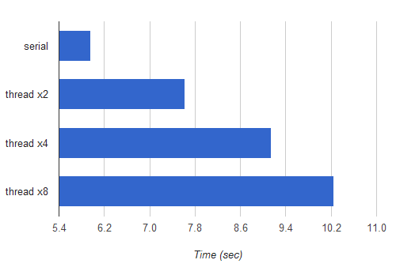

Update (2017-01-31): The full code sample for this article that works on both Python 2 and 3 has been posted to Github; it also addresses platform-specific pickling issues some folks have run into.
In a previous post on Python threads, I briefly mentioned that threads are unsuitable for CPU-bound tasks, and multiprocessing should be used instead. Here I want to demonstrate this with benchmark numbers, also showing that creating multiple processes in Python is just as simple as creating multiple threads.
First, let's pick a simple computation to use for the benchmarking. I don't want it to be completely artificial, so I'll use a dumbed-down version of factorization - breaking a number to its prime factors. Here is a very naive and un-optimized function that takes a number and returns a list of factors:
def factorize_naive(n):
""" A naive factorization method. Take integer 'n', return list of
factors.
"""
if n < 2:
return []
factors = []
p = 2
while True:
if n == 1:
return factors
r = n % p
if r == 0:
factors.append(p)
n = n / p
elif p * p >= n:
factors.append(n)
return factors
elif p > 2:
# Advance in steps of 2 over odd numbers
p += 2
else:
# If p == 2, get to 3
p += 1
assert False, "unreachable"
Now, as the base for benchmarking, I'll be using the following serial (single-thread) factorizer that takes a list of numbers to factorize, and returns a dict mapping a number to its list of factors:
def serial_factorizer(nums):
return {n: factorize_naive(n) for n in nums}
The threaded version follows. It also takes a list of numbers to factorize, as well as the amount of threads to create. It then divides the list into chunks and assigns each chunk to a separate thread:
def threaded_factorizer(nums, nthreads):
def worker(nums, outdict):
""" The worker function, invoked in a thread. 'nums' is a
list of numbers to factor. The results are placed in
outdict.
"""
for n in nums:
outdict[n] = factorize_naive(n)
# Each thread will get 'chunksize' nums and its own output dict
chunksize = int(math.ceil(len(nums) / float(nthreads)))
threads = []
outs = [{} for i in range(nthreads)]
for i in range(nthreads):
# Create each thread, passing it its chunk of numbers to factor
# and output dict.
t = threading.Thread(
target=worker,
args=(nums[chunksize * i:chunksize * (i + 1)],
outs[i]))
threads.append(t)
t.start()
# Wait for all threads to finish
for t in threads:
t.join()
# Merge all partial output dicts into a single dict and return it
return {k: v for out_d in outs for k, v in out_d.iteritems()}
Note that the interface between the main and worker threads is very simple. Each worker thread has some amount of work to do, after which it simply returns. Thus the only thing the main thread does is fire up nthreads threads with suitable arguments and then waits for them to finish.
I ran a benchmark of the serial vs. threaded factorizer with 2, 4 and 8 threads. The benchmark was to factorize a constant set of large numbers, to minimize differences due to random chance. All the tests were run on my Ubuntu 10.04 laptop with a Intel Core i7-2820MQ CPU (4 physical cores, hyper-threaded).
Here are the results:
The horizontal axis is time in seconds, hence shorter bars mean faster execution. Yes, splitting the computation to several threads is actually slower than the serial implementation, and the more threads are used, the slower it gets.
This may be a bit surprising if you're not familiar with the way Python threads are implemented and the GIL (Global Interpreter Lock). To understand why this is happening, you can hardly do better than read Dave Beazley's articles and presentations on this topic. His work is so comprehensive and accessible that I see absolutely no point repeating any of it (except the conclusions) here.
Let's now do the same, just with processes instead of threads. Python's excellent multiprocessing module makes processes as simple to launch and manage as threads. In fact, it provides very similar APIs to the threading module. Here's multi-process factorizer:
def mp_factorizer(nums, nprocs):
def worker(nums, out_q):
""" The worker function, invoked in a process. 'nums' is a
list of numbers to factor. The results are placed in
a dictionary that's pushed to a queue.
"""
outdict = {}
for n in nums:
outdict[n] = factorize_naive(n)
out_q.put(outdict)
# Each process will get 'chunksize' nums and a queue to put his out
# dict into
out_q = Queue()
chunksize = int(math.ceil(len(nums) / float(nprocs)))
procs = []
for i in range(nprocs):
p = multiprocessing.Process(
target=worker,
args=(nums[chunksize * i:chunksize * (i + 1)],
out_q))
procs.append(p)
p.start()
# Collect all results into a single result dict. We know how many dicts
# with results to expect.
resultdict = {}
for i in range(nprocs):
resultdict.update(out_q.get())
# Wait for all worker processes to finish
for p in procs:
p.join()
return resultdict
The only real difference here vs. the thread solution is the way output is passed back from the worker to the main thread/process. With multiprocessing, we can't simply pass a dict to the sub-process and expect its modifications to be visible in another process. There are several approaches to solve this problem. One is use a synchronized dictionary from multiprocessing.managers.SyncManager. The one I've chosen is to simply create a Queue, and let each worker process put a result dictionary into it. mp_factorizer can then collect all results into a single dictionary and then join the processes (note that as mentioned in the multiprocessing documentation, join should be called after all results in a Queue the process was writing into were consumed).
I've run the same benchmark, adding the runtimes from mp_factorizer to the chart:
As you can see, there are nice speedups. The fastest multi-process version (split to 8 processes) runs 3.1 times as fast as the serial version. Although my CPU only has 4 physical cores (and the pair of hardware "threads" in each core share a lot of execution resources), the 8-process version runs faster, which is probably due to the fact that the OS doesn't allocate the CPUs optimally between "heavy" tasks. Another reason for the speedup being a bit far from 4x is that the work isn't evenly divided between sub-processes. Some numbers are dramatically faster to factorize than others, and currently no attention is being paid to load-balancing the tasks between the workers.
These are interesting topics to explore, but way beyond the scope of this post. For our needs the best advice is to run benchmarks and decide on the best parallellization strategy according to the results.
The goal of this post was two-fold. One, to provide an easy demonstration of how Python threads are bad for speeding up CPU-bound computations (they're actually pretty good for slowing them down!), while multiprocessing does use the multi-core CPU in a parallel manner, as expected. Two, to show that multiprocessing makes writing parallel code as easy as using threading. There's a bit more work to be done when synchronizing objects between processes than between threads, but otherwise it's very similar code. And if you ask me, that object synchronization is more difficult is a good thing, because the less objects are shared the better. This is the main reason why multi-process programming is often considered safer and less bug-prone than multi-threaded programming.